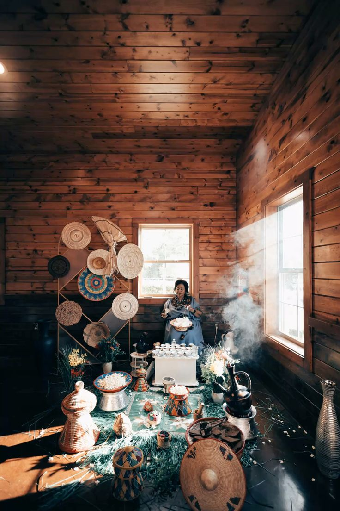

Discover our delicious pastries and breads made with the finest ingredients.
Founded on the time-honored traditions of old-world baking, our store began with a simple mission: to keep the craft of slow-fermented, scratch-made bread alive. For generations, our recipes have been passed down and perfected, relying on patience, heirloom grains, and the same brick-oven techniques that defined neighborhood bakeries a century ago. While the world outside moves faster every day, our kitchen remains rooted in history—honoring the timeless rituals of flour, water, yeast, and fire to bring authentic, heritage baking to our community.

| day | time | Monday | 9:00AM-6:00AM | Sunday | closed |
|---|